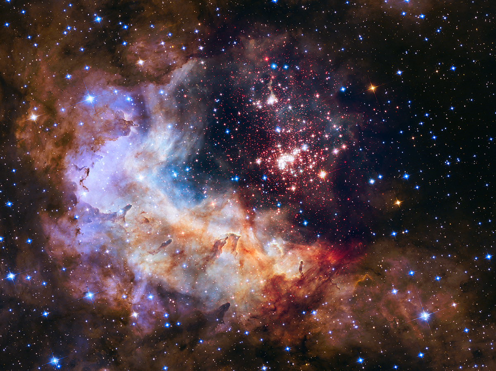

La totalidad del espacio, el tiempo, la materia y la energía.
Incluye galaxias, estrellas, planetas, nebulosas, agujeros negros,
partículas subatómicas y todo lo que podamos observar y comprender.
El universo abarca tanto los objetos físicos como
las fuerzas y leyes que rigen su comportamiento.

Se cree que el universo surgió a partir de un evento llamado el Big Bang,
hace aproximadamente 13.8 mil millones de años. En ese momento, toda la materia
y la energía estaban concentradas en un punto extremadamente caliente y denso.
Posteriormente, el universo comenzó a expandirse y enfriarse, dando origen a
la formación de galaxias, estrellas y otros objetos cósmicos.
Se cree que el universo surgió a partir de un evento llamado el Big Bang,
hace aproximadamente 13.8 mil millones de años. En ese momento, toda la materia
y la energía estaban concentradas en un punto extremadamente caliente y denso.
Posteriormente, el universo comenzó a expandirse y enfriarse, dando origen a
la formación de galaxias, estrellas y otros objetos cósmicos.
El universo es vasto y en constante evolución. A medida que las galaxias se alejan
unas de otras debido a la expansión del espacio, el universo se vuelve cada vez más grande.
Dentro de él, existen innumerables sistemas estelares, planetas y otros cuerpos celestes
que continúan siendo objeto de estudio y exploración por parte de los científicos.
Es importante tener en cuenta que la comprensión del universo es un campo en constante
desarrollo, y nuestras teorías y conocimientos están sujetos a revisiones y actualizaciones
a medida que avanzamos en la investigación y la tecnología.